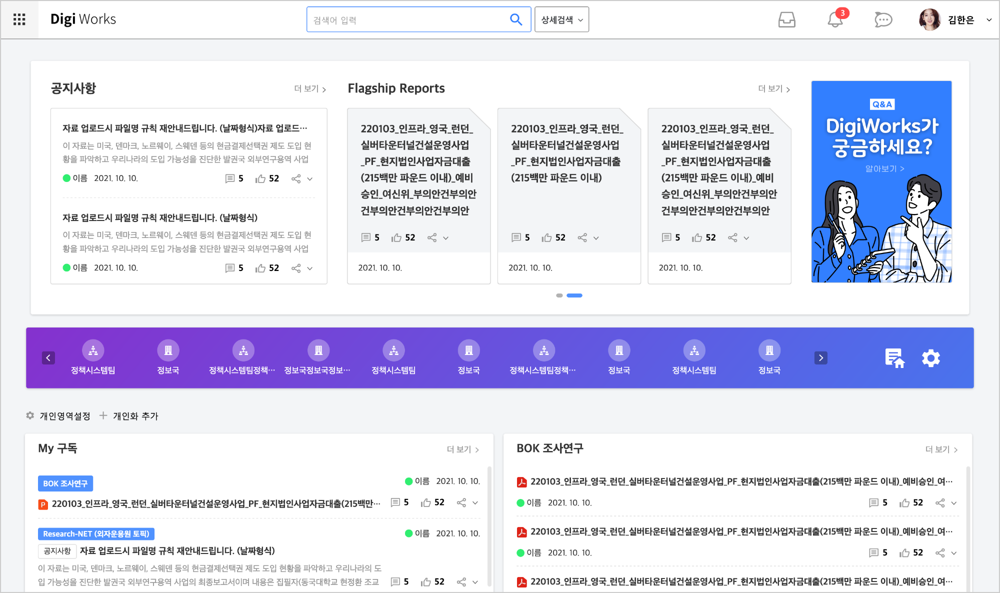
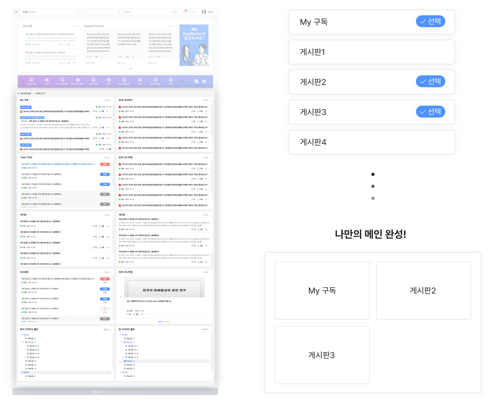
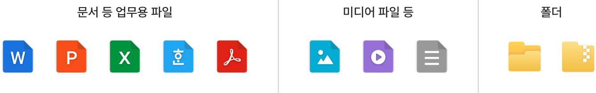
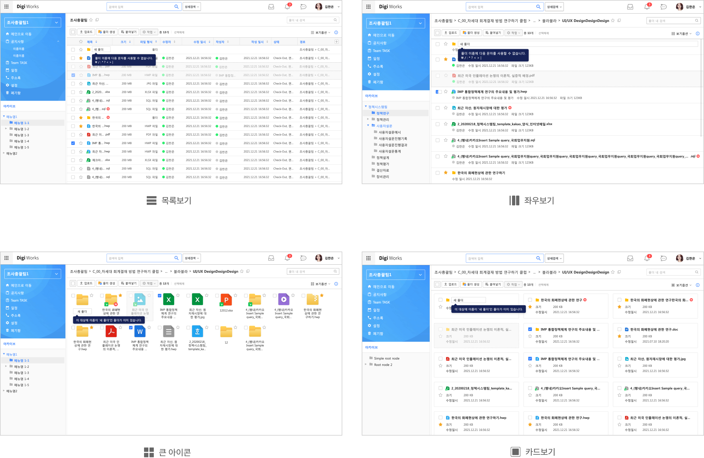
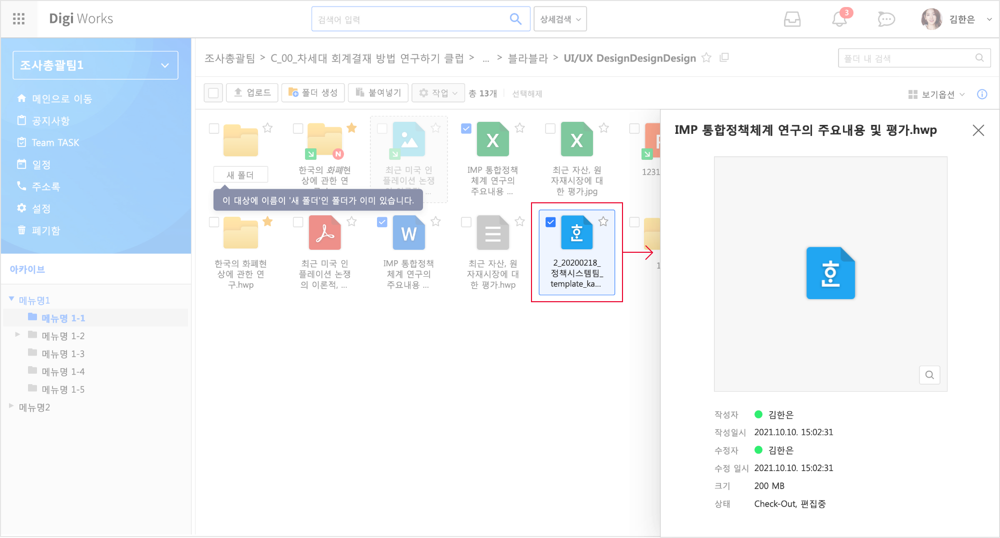
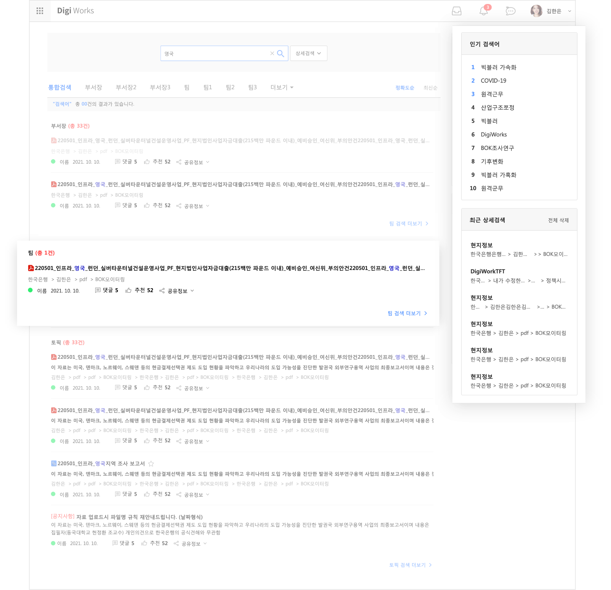

SEO JEA
이력서
Notion
경력기술서
한국은행 자료 공유를 위한 포털형 사이트 구축
단순하면서도 명확한 UI를 통해 쉽고 빠르게 서비스를 익히고 사용할 수 있도록 디자인 하였습니다.
사용자의 빠른 목적달성을 위한 기능 중심적인 UX를 제공합니다.
작업기여도
디자인 50%
웹 퍼블리싱 100%

메인 웹파트 영역을 사용자가 직접 구성하여
정보에 대한 접근성과 편의성을 높였습니다.
사용자 자신이 직접 구성하는 메인 웹파트를 통해 필요없는 정보에 대한 피로도를 낮춰 서비스에 대한 만족도를 높였습니다.

컴퓨터의 파일 탐색기능을 닮은 UI를 제공하여
보다 쉬운 서비스를 제공합니다.
주요 Office 파일과 미디어 파일 확장자를 떠올릴 수 있는 시인성 높은 디자인의 아이콘을 제작하였습니다.

4가지 뷰모드를 제공해 취향과 목적에 따라 선택하여 사용 가능합니다.

컴퓨터의 파일 탐색기의 미리보기와 비슷한 기능을 제공하여 편의성을 높였습니다.

자료 위주의 결과 페이지와
사이드 영역의 부가기능을 통해 편의성을 높였습니다.
자료를 찾기위한 검색이라는 사용자의 목표를 달성하기 위해 자료 위주의 결과를 보여주고
인기 검색어, 최근 검색기록을 제공하여 사용자 편의성을 높였습니다.

목록으로 돌아가기